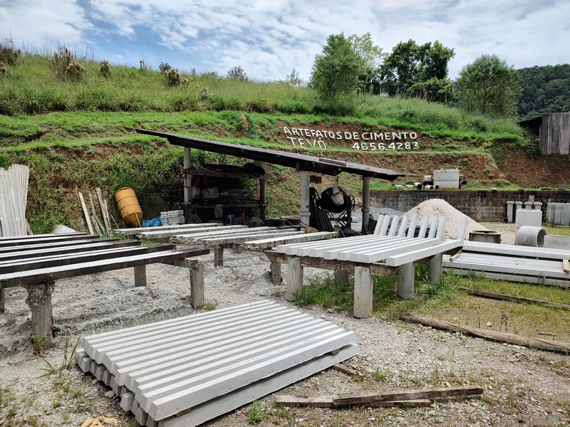

LINHA DE PRODUÇÃO
Nossos Produtos
Soluções completas em pré-moldados de concreto para saneamento, drenagem urbana, rodovias e propriedades rurais.
Drenagem & Rodovias

Tubos de Concreto
Manilhas e tubos de concreto simples ou armado (ponta e bolsa) em diversas bitolas para galerias pluviais, canalização de córregos e travessias rodoviárias.
Cotar Bitolas
Saneamento

Anéis e Anilhas para Poço
Anéis pré-moldados de encaixe preciso, tampas e fundos para construção de poços caipiras, cisternas, fossas sépticas e caixas de passagem.
Cotar Medidas
Cercamento & Estrutura

Mourões e Artefatos
Mourões retos e curvos de concreto armado, guias, canaletas e peças especiais desenvolvidas para máxima durabilidade contra intempéries.
Solicitar Tabela